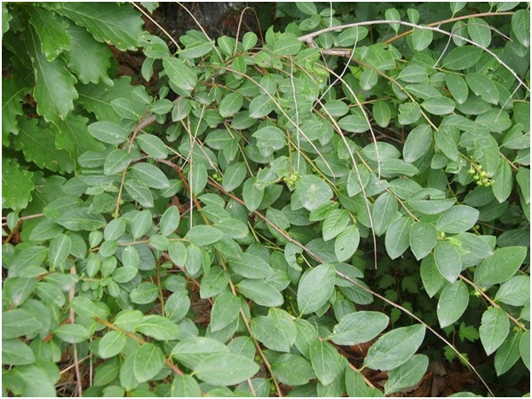

12. Памятник природы «Виноградовник»
Образован в целях сохранения природного комплекса, сформированного на горе Долгуша, как места обитания виноградовника японского – растения, нуждающегося в особой охране и занесенного в Красную книгу РФ и Красную книгу Еврейской автономной области. Площадь памятника природы составляет 45 га. Расположен в 1 км к северу от с. Венцелево, на территории муниципального образования «Ленинский муниципальный район», северо-западнее устья реки Биджан.
На юго-восточном склоне горы Долгуша впервые в ЕАО обнаружен редкий вид растений – виноградовник японский, относящийся к семейству виноградовых. Данная популяция виноградовника произрастает на значительном расстоянии от основной части ареала – юга Приморского края, Японии, Северо-Восточного Китая, то есть в области вид произрастает на северной границе ареала в наиболее угнетённых условиях (более суровый климат).
Кроме виноградовника японского на горе Долгуша произрастают: боярышник перистонадрезанный, василистник ложнолепестковый, диоскорея ниппонская, зорька (лихнис) сверкающая, ластовень стеблеобъемлющий, лилия Буша, лилия низкая, нителистник сибирский, пион молочноцветковый, прострел китайский, рододендрон даурский, секуринега полукустарниковая, тромсдорфия реснитчатая, ширококолокольчик крупноцветковый. Занесенные в Красную книгу РФ и Красную книгу ЕАО: пион молочноцветковый, ломонос кокорышелистный и др.

Виноградовник японский Ampelópsis japónica (занесен в Красную книгу ЕАО)